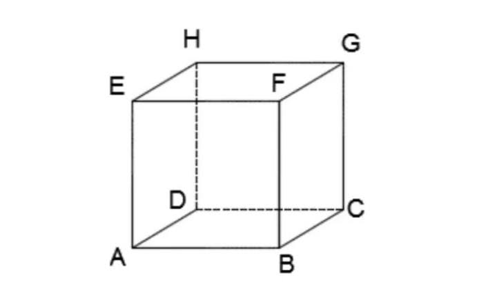
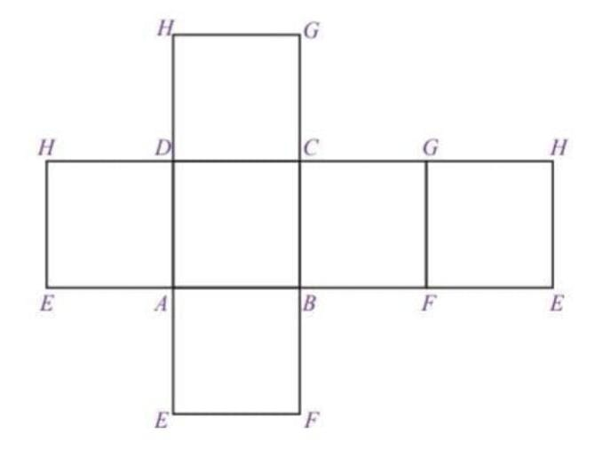
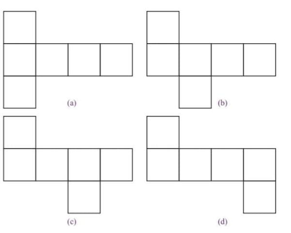
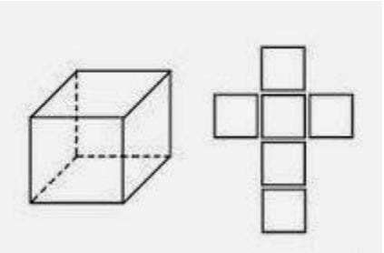
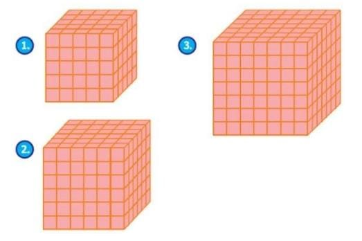

Bangun ruang sisi datar merupakan suatu bangun tiga dimensi yang memiliki ruang/ volume/ isi dan juga sisi-sisi yang membatasinya. Secara garis besar, bangun ruang bisa kita kategorikan menjadi dua kelompok, antara lain: bangun ruang sisi datar dan bangun ruang sisi lengkung. Yang termasuk dalam bangun ruang sisi datar yaitu kubus, balok, prisma, dan limas. Sementara untuk bangun ruang sisi lengkung terdiri atas kerucut, tabung, dan bola. Bangun ruang sisi datar merupakan suatu bangun ruang di mana pada masing-masing sisinya tersusun dari bangun datar. Apabila dalam suatu bangun ruang mempunyai satu saja sisi yang lengkung maka bangun tersebut tidak bisa dikatakan sebagai bangun ruang sisi datar.
Pernahkah kamu melihat dadu? Dadu merupakan salah satu alat permainan yang berbentuk kubus. Apa yang dimaksud dengan kubus? Coba kamu pelajari uraian berikut ini.
1. Pengertian Kubus
Perhatikan Gambar 23 secara saksama. Gambar tersebut menunjukkan sebuah bangun ruang yang semua sisinya berbentuk persegi dan semua rusuknya sama panjang. Bangun ruang seperti itu dinamakan kubus. Gambar 23 menunjukkan sebuah kubus ABCD.EFGH yang memiliki unsur-unsur sebagai berikut.
2. Sifat-sifat Kubus
a. Semua sisi kubus berbentuk persegi. Jika diperhatikan, sisi ABCD, EFGH, ABFE dan seterusnya memiliki bentuk persegi dan me miliki luas yang sama.
b. Semua rusuk kubus berukuran sama panjang. Rusuk-rusuk kubus AB, BC, CD, dan seterusnya memiliki ukuran yang sama panjang.
c. Setiap diagonal bidang pada kubus memiliki ukuran yang sama panjang.
d. Setiap diagonal ruang pada kubus memiliki ukuran sama panjang. Dari kubus ABCD.EFGH
e. Setiap bidang diagonal pada kubus memiliki bentuk persegipanjang. Perhatikan bidang diagonal ACGE
3. Menggambar Kubus
Kamu telah memahami pengertian, unsur, dan sifat-sifat kubus. Sekarang, bagaimana cara menggambarnya? Menggambar bangun ruang khususnya kubus, lebih mudah dilakukan pada kertas berpetak. Adapun langkah-langkah yang harus dilakukan adalah sebagai berikut.
● Gambarlah sebuah persegi, misalkan persegi ABFE yang berperan sebagai sisi depan. Bidang ABFE ini disebut sebagai bidang frontal, artinya bidang yang dibuat sesuai dengan bentuk sebenarnya. Coba perhatikan Gambar 8.7 (a) .
● Langkah selanjutnya, buatlah ruas garis yang sejajar dan sama panjang dari setiap sudut persegi yang telah dibuat sebelumnya. Panjang ruas- ruas garis tersebut kurang lebih setengah dari panjang sisi persegi dengan kemiringan kurang lebih 45°.
Perhatikan Gambar 8.7 (b) . Garis AD digambar putus-putus, ini menunjukkan bahwa ruas garis tersebut terletak di belakang persegi ABFE.
● Kemudian, buatlah persegi dengan cara meng hubungkan ujung-ujung ruas garis yang telah dibuat sebelumnya. Beri nama persegi CDHG. Persegi tersebut berperan sebagai sisi belakang dari kubus yang akan dibuat. Coba perhatikan Gambar 8.7 (c) . Pada gambar tersebut, terlihat bahwa sisi atas, sisi bawah, dan sisi samping digambarkan berbentuk jajargenjang. Bidang seperti ini disebut bidang ortogonal, artinya bidang yang digambar tidak sesuai dengan keadaan sebenarnya.
4. Jaring-Jaring Kubus
Untuk mengetahui jaring-jaring kubus, lakukan kegiatan berikut dengan kelompok belajarmu.
Kegiatan 3.11. Siapkan tiga buah dus yang berbentuk kubus, gunting, dan spidol
2. Ambil salah satu dus. Beri nama setiap sudutnya, misalnya ABCD.EFGH.
Kemudian, irislah beberapa rusuknya mengikuti alur berikut.
3. Rebahkan dus yang telah diiris tadi. Bagaimanakah bentuknya?
4. Lakukan hal yang sama pada dua dus yang tersisa. Kali ini, buatlah alur yang berbeda, kemudian rebahkan. Bagaimana bentuknya?
Jika kamu melakukan Kegiatan 3.1 dengan benar, pada dus pertama akan diperoleh bentuk berikut.
Hasil rebahan dus makanan pada Gambar 27 disebut jaring-jaring kubus,. Jaring-jaring kubus adalah rangkaian sisi-sisi suatu kubus yang jika dipadukan akan membentuk suatu kubus. Terdapat berbagai macam bentuk jaring-jaring kubus. Di antaranya sebagai berikut
5. Luas Permukaan Kubus
Misalkan, kamu ingin membuat kotak makanan berbentuk kubus dari sehelai karton. Jika kotak makanan yang diinginkan memiliki panjang rusuk 8 cm, berapa luas karton yang dibutuhkan untuk membuat kotak makanan tersebut?
Masalah ini dapat diselesaikan dengan cara menghitung luas permukaan suatu kubus.
Coba kamu perhatikan Gambar 29 berikut ini.
Dari Gambar 29 terlihat suatu kubus beserta jaring-jaringnya. Untuk mencari luas permukaan kubus, berarti sama saja dengan menghitung luas jaring-jaring kubus tersebut.
Oleh karena jaring-jaring kubus merupakan 6 buah persegi yang sama dan kongruen maka
luas permukaan kubus = luas jaring-jaring kubus
= 6 × (s × s)
= 6 × s²
= L = 6 s²
Jadi, luas permukaan kubus dapat dinyatakan dengan rumus sebagai berikut.
Luas permukaan kubus = 6s²
6. Volume KubusMisalkan, sebuah bak mandi yang berbentuk kubus memiliki panjang rusuk 1,2 m. Jika bak tersebut diisi penuh dengan air, berapakah volume air yang dapat ditampung? Untuk mencari solusi permasalahan ini, kamu hanya perlu menghitung volume bak mandi tersebut. Bagaimana mencari volume kubus?
Untuk menjawabnya, coba kamu perhatikan Gambar 30
Gambar 30 menunjukkan bentuk-bentuk kubus dengan ukuran berbeda. Kubus pada Gambar 8.11
(a) merupakan kubus satuan. Untuk membuat kubus satuan pada Gambar 8.11
(b) , diperlukan 2 × 2 × 2 = 8 kubus satuan, sedangkan untuk membuat kubus pada Gambar 8.11
(c) , diperlukan 3 × 3 × 3 = 27 kubus satuan. Dengan demikian, volume atau isi suatu kubus dapat ditentukan dengan cara mengalikan panjang rusuk kubus tersebut sebanyak tiga kali.
sehingga
volume kubus = panjang rusuk × panjang rusuk × panjang rusuk
= s × s × s
= s³
Jadi, volume kubus dapat dinyatakan sebagai berikut.
Volume kubus = s³
dengan s merupakan panjang rusuk kubus.
Ringkasan1. Kubus adalah sebuah bangun ruang yang semua sisinya berbentuk persegi dan semua rusuknya sama Panjang.
2. Semua sisi kubus berbentuk persegi.
3. Semua rusuk kubus berukuran sama panjang.
4. Setiap diagonal bidang pada kubus memiliki ukuran yang sama panjang.
5. Setiap diagonal ruang pada kubus memiliki ukuran sama panjang.
6. Setiap bidang diagonal pada kubus memiliki bentuk persegipanjang.
7. Rumus Luas permukaan kubus = 6s²
8. Rumus Volume kubus = s³
Latihan1. Sebuah kotak kayu berbentuk kubus memiliki luas permukaan 3.750 cm2. Hitunglah panjang sisi kotak kayu tersebut ?
Pembahasan :
Luas Permukaan Kubus = 6 x s2
3750 = 6s2
s2 =37506
s2 = 625
s = √625 = 25 cm
Jadi panjang sikota kayu tersebut adalah 25 cm
2. Panjang semua rusuk kubus 240 dm. Hitunglah volume kubus tersebut (dalam cm).
Pembahasan :
Dari soal diketahui:
s = 240 dm = 2.400 cm
maka volumenya:
V = s3
V = (2.400 cm)3
V = 13.824.000.000 cm3
V = 1,3824 x 1010 cm3
Jadi volume kubus tersebut adalah 1,3824 x 1010 cm3
3. Sebuah kubus memiliki volume 343 cm3. Jika panjang rusuk kubus tersebut diperbesar menjadi 4 kali panjang rusuk semula, tentukan volume kubus yang baru.
Penyelesaian:
Kita harus mencari panjang rusuk awal (s0), yakni:
V0 = s3
343 cm3 = s3
(7 cm)3 = s3
s0 = 7 cm
Sekarang kita hitung panjang jika rusuk tersebut diperbesar 4 kali dari panjang semula, maka
s1 = 4s0
s1 = 4.7 cm
s1 = 28 cm
Sekarang kita hitung volume kubus setelah rusuknya diperbesar 4 kali yakni:
V1 = s3
V1 = (28 cm)3
V1 = 21.952 cm3.
Jadi volume kubus setelah diperbesar 4 kali adalah 21.952 cm3
4. Sebuah kubus panjang rusuknya 8 cm, kemudian rusuk tersebut diperkecil sebesar ¾ kali panjang rusuk semula. Berapa volume kubus sebelum dan setelah diperkecil?
Penyelesaian:
Misalkan rusuk sebelum diperkecil s1 dan setelah diperkecil s2, maka
V1 = s13
V1 = (8 cm)3
V1 = 512 cm3
Sekarang hitung rusuk jika diperkcil ¾ kali semula maka
s2 = ¾ s1
s2 = ¾ (8 cm)
s2 = 6 cm
maka
V2 = s13
V2 = (6 cm)3
V2 = 216 cm3
Jadi, volume kubus setelah diperkecil adalah 216 cm3
Sebuah tangki berisi air dengan bentuk kubus, mempunyai luas alas 25 m². Jika, tangki tersebut berisi penuh, maka berapa volume air dalam tangki adalah....
Pembahasan
L = s x s
25 = s²
s = 5 m
V = s x s x s
= 5 x 5 x 5
= 125
Jadi, volume air dalam tangki adalah 125 m³
Evaluasi1. Sebuah tangki berisi air dengan bentuk kubus, mempunyai luas alas 25 m². Jika, tangki tersebut berisi penuh, maka berapa volume air dalam tangki adalah
2. Sebuah kotak kayu berbentuk kubus memiliki luas permukaan 3.750 cm2. Hitunglah panjang sisi kotak kayu tersebut ?
3. Sebuah peti kayu yang berbentuk kubus mempunyai panjang sisi 14 cm. Hitunglah berapa volume kubus tersebut?
4. Sukma memiliki kawat sepanjang 156 cm. Ia ingin menggunakan kawat tersebut untuk membuat kerangka kubus. Berapa panjang rusuk kubus agar kawat tidak bersisa ?
5. Sebuah bak mandi berukuruan kubus memiliki panjang sisi 6 dm dan bak tersebut berisikan air dalam keadaan penuh. Ketika Andi mandi di pagi hari, volume bak mandi tersebut tersisa 200 liter. Berapa liter air yang digunakan oleh Andi ketika mandi ?